<!DOCTYPE HTML>
<html lang="en">
<head>
  <meta http-equiv="Content-Type" content="text/html; charset=UTF-8">
  <title>Yifu Tian</title>
  <meta name="author" content="Yifu Tian">
  <meta name="viewport" content="width=device-width, initial-scale=1">
  <link rel="icon" type="image/svg+xml" href="images/gwu.png">
  <link rel="stylesheet" type="text/css" href="stylesheet.css?v=20260407-01">
</head>

<body>
  <header class="header">
    <div class="container">
      <h1 class="page-title">Build what works. Aim for what matters.</h1>
    </div>
  </header>

  <div class="container">
    <section class="content intro">
      <div class="container">
        <div class="intro-text">
          <p>Hi there 👋</p>
          <p>
            I'm Yifu Tian. I go by Joseph. I'm now working at <a href="https://en.sjtu.edu.cn/"><b>Shanghai Jiao Tong University</b></a> as a visiting student under the supervision of
            <a href="https://qintong.xyz/"><b>Prof. Tong Qin</b></a>. I will join
            <a href="https://engineering.gwu.edu/"><b>George Washington University</b></a> in Fall 2026 as a Ph.D. student under the supervision of
            <a href="https://chuchuchen.net"><b>Prof. Chuchu Chen</b></a>.
          </p>
          <p>
            I received my B.Eng. in Electrical Computer Engineering from
            <a href="https://www.cuhk.edu.hk/english/index.html"><b>The Chinese University of Hong Kong</b></a> in 2025.
          </p>
          <p>Previously:</p>
          <ul class="previously-list">
            <li>I was a visiting student at <a href="http://www.ict.ac.cn/"><b>ICT@CAS</b></a>.</li>
            <li>I worked as a research assistant at <a href="https://airs.cuhk.edu.cn/"><b>AIRS</b></a>.</li>
            <li>I was also a visiting scholar at <a href="https://illinois.edu/"><b>UIUC</b></a>, <a href="https://grainger.illinois.edu/about/self-guided-tour/thomas-m-siebel-center"><b>Thomas M. Siebel Center for CS</b></a>.</li>
            <li>After graduating from CUHK-Shenzhen, I worked as a research assistant in <a href="https://zju-fast-lab.github.io/groups/"><b>FAST Lab@Zhejiang University</b></a>.</li>
          </ul>
          <!-- <p>
            <b>Goal</b>: 
          </p> -->
          <p style="text-align:center">
            <a href="mailto:yifutian@link.cuhk.edu.cn"><b>Email</b></a>
            /
            <a href="https://scholar.google.cat/citations?hl=ja&view_op=list_works&gmla=AEk_c1u2X_b_I0TtaOsZmjD7R_kK419xD4L0s1dKDArjStC7jLQdxHu-rXka5alNy-x-xHdTXMu66C6qRxhb42qmsncT010Q2W2PFMm4Stqk2VA&user=imdUiToAAAAJ"><b>Google Scholar</b></a>
            /
            <a href="https://github.com/Yifu-Tian"><b>GitHub</b></a>
            /
            <a href="https://www.linkedin.com/in/yifu-tian-6a347731b/"><b>LinkedIn</b></a>
            /
            <a href="https://space.bilibili.com/443271409?spm_id_from=333.1007.0.0"><b>Bilibili</b></a>
          </p>
        </div>
        <div class="profile-info">
          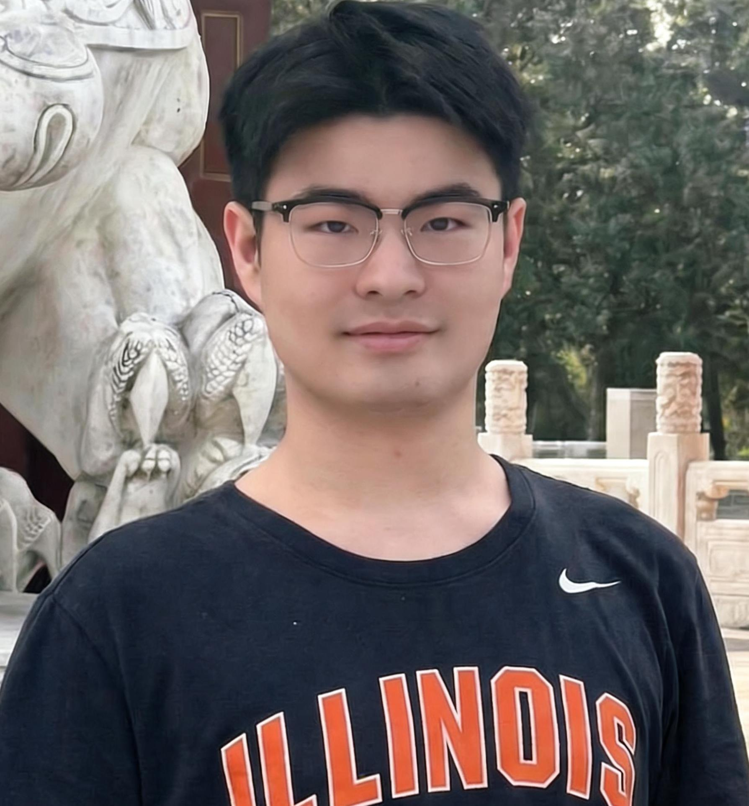
          <span style="font-size: 30px; font-weight: bold;">Yifu (Joseph) Tian</span> 
          <br>
          <span style="font-size:18px; font-weight: bold;">Visiting Student@ SJTU </span>
          <br>
          <span style="font-size:18px; font-weight: bold;">Incoming PhD student@ GWU </span>
          <br>
          Email: josepht@gwmail.gwu.edu
          
        </div>
      </div>
    </section>

    <section class="content">
        <div class="logo-gallery">
            <a href="https://www.gwu.edu/" target="_blank"></a>
            <a href="https://www.cuhk.edu.cn/" target="_blank"></a>
            <a href="https://illinois.edu/" target="_blank"></a>
            <a href="https://airs.cuhk.edu.cn/" target="_blank"></a>
            <a href="https://zju-fast-lab.github.io/" target="_blank">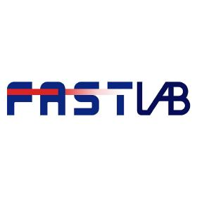</a>
            <a href="https://www.sjtu.edu.cn/" target="_blank"></a>
            <a href="http://www.ict.cas.cn/" target="_blank"></a>
        </div>
    </section>
    
    <section class="content">
      <heading><b>News</b></heading>
      <ul>
        <li><b>March, 2026</b>: I started my internship at Shanghai Jiao Tong University.</li>
        <li><b>June, 2025</b>: I received B.Eng. in Electrical Computer Engineering from The Chinese University of Hong Kong.</li>
      </ul>
    </section>

    <section class="content">
        <heading><b>Publications</b></heading>
        <div class="publication-item">
          <!-- <div class="image-container">
              
          </div> -->
          <div class="text-container">
              <a href="https://tx-leo.github.io/DoorBot">
                  <papertitle><b>Topological Motion Planning Diffusion: Generative Tangle-Free Path Planning for Tethered Robots in Obstacle-Rich Environments</b></papertitle>
              </a>
              <br>
              <b><u>Yifu Tian</u></b>, Xinhang Xu, Thien-Minh Nguyen, Muqing Cao
              <br>
              <span style="color: red;">IEEE/RSJ International Conference on Intelligent Robots and Systems (IROS), 2026(Under Review)</span>
              <br>
              <a href="https://arxiv.org/abs/2603.26696"><b>Paper</b></a> /
              <a href="#" class="coming-soon-trigger"><b>Video</b></a> /
              <a href="https://github.com/Yifu-Tian/tmpd-public"><b>Code</b></a> /
              <br>
              <font color='gray'>In extreme environments, tethered robots require continuous navigation while avoiding cable entanglement. Traditional planners struggle in these lifelong planning scenarios due
to topological unawareness, while topology-augmented graphsearch methods face computational bottlenecks in obstaclerich environments where the number of candidate topological
classes increases. To address these challenges, we propose
Topological Motion Planning Diffusion (TMPD), a novel generative planning framework that integrates lifelong topological
memory. Benchmarking in obstacle-rich simulated environments demonstrates that TMPD
achieves a collision-free reach of 100% and a tangle-free rate of
97.0%, outperforming traditional topological search and purely
kinematic diffusion baselines in both geometric smoothness
and computational efficiency. Simulation with AGX-Dynamics for unity further validates the practicality of the proposed
approach.</font>
          </div>
      </div>
      </section>
        <!-- 
        <br> -->
        <!-- <br>

        <div class="publication-item">
          <div class="image-container">
              
          </div>
          <div class="text-container">
              <a href="https://tx-leo.github.io/KOSMOS-E">
                  <papertitle><b>KOSMOS-E: Learning to Follow Instruction for Robotic Grasping</b></papertitle>
              </a>
              <br>
              <b><u>Zhi Wang*</u></b>, Xun Wu*, Shaohan Huang, Li Dong, Wenhui Wang, Shuming Ma, Furu Wei
              <br>
              <span style="color: red;">IEEE International Conference on Intelligent Robots and System (IROS), 2024, Oral Pitch</span>
              <br>
              <a href="https://tx-leo.github.io/KOSMOS-E"><b>Website</b></a> / 
              <a href="data/IROS2024_KOSMOS-E.pdf"><b>Paper</b></a> / 
              <a href="https://youtu.be/ZUHpsCZ5nXc"><b>Video</b></a> / 
              <a href="https://github.com/TX-Leo/KOSMOS-E"><b>Code</b></a> /
              <br>
              <font color='gray'>Proposed KOSMOS-E, a Multimodal Large Language Model (MLLM) that leverages instruction-following robotic grasping data to enhance capabilities for precise and intricate robotic grasping maneuvers.</font>
          </div>
      </div>
      </section> -->

    <section class="content">
      <heading><b>Education</b></heading>
      <ul>
        <li class="experience-item">
          
          <div>
            <b>The George Wahington University</b>, Washington D.C., USA<br>
          ME PhD in Robotics • Aug. 2026 to Present<br>
          Advisor: <a href="https://mae.engineering.gwu.edu/chuchu-chen"><b>Prof. Chuchu CHEN</b></a>
          </div>
        </li>
        </ul>
      
        <ul>
          <li class="experience-item">
            
            <div>
              <b>The Chinese University of Hong Kong</b>, Shenzhen, China<br>
            B.Eng in ECE • Aug. 2021 to Jun. 2025<br>
            Academic Advisor: <a href="https://sai.cuhk.edu.cn/en/teacher/159"><b>Prof. Pooi-Yuen KAM</b></a>
            </div>
          </li>
          </ul>
    </section>

    <section class="content open-service" style="--open-service-thumb-height: 180px;">
      <heading><b>Open Service</b></heading>
      <p>
        I also upload videos about my research on Bilibili. My goal is to record my academic growth. Feel free to watch
        <a href="https://space.bilibili.com/443271409?spm_id_from=333.1007.0.0"><b>here</b></a>.
      </p>
      <div class="video-grid">
        <a class="video-card" href="https://www.bilibili.com/video/BV13XDiBnEZR/?share_source=copy_web&vd_source=2925121f6b5fb979dc7fcc96129c516f" target="_blank" rel="noopener noreferrer">
          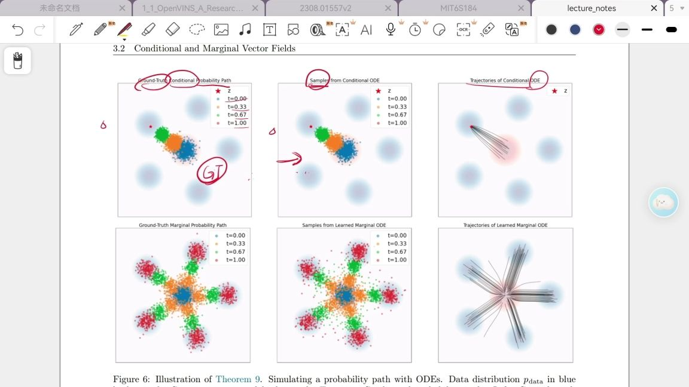
          <div class="video-card-body">
            <h3>MIT 6.S184: Conditional and Marginal Vector Fields</h3>
            <p>Course learning notes from MIT 6.S184.</p>
          </div>
        </a>
        <a class="video-card" href="https://www.bilibili.com/video/BV1ueDcB2E27/?share_source=copy_web&amp;vd_source=2925121f6b5fb979dc7fcc96129c516f" target="_blank" rel="noopener noreferrer">
          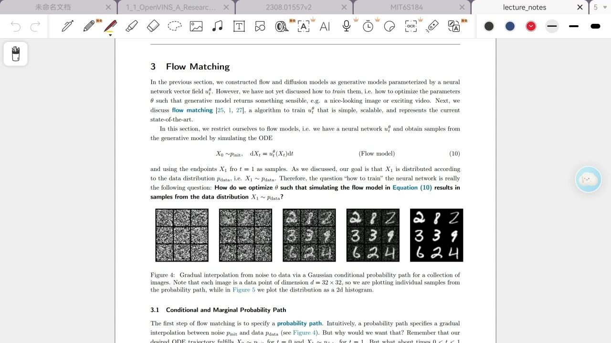
          <div class="video-card-body">
            <h3>MIT 6.S184: Conditional and Marginal Probability Path</h3>
            <p>Course learning notes from MIT 6.S184.</p>
          </div>
        </a>
        <a class="video-card" href="https://www.bilibili.com/video/BV1C6XCBbEHF/?share_source=copy_web&amp;vd_source=2925121f6b5fb979dc7fcc96129c516f" target="_blank" rel="noopener noreferrer">
          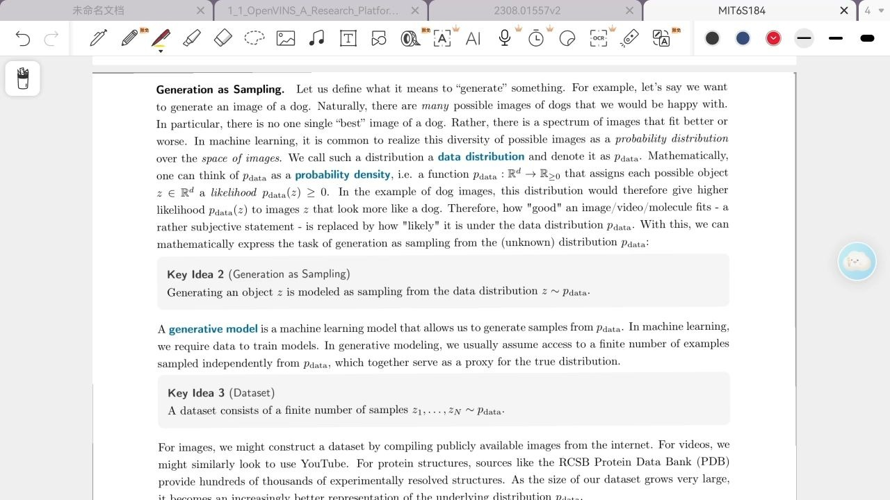
          <div class="video-card-body">
            <h3>MIT 6.S184: Generative Modelling as Sampling</h3>
            <p>Course learning notes from MIT 6.S184.</p>
          </div>
        </a>
        <a class="video-card" href="https://www.bilibili.com/video/BV1kx9EBdETa/?share_source=copy_web&amp;vd_source=2925121f6b5fb979dc7fcc96129c516f" target="_blank" rel="noopener noreferrer">
          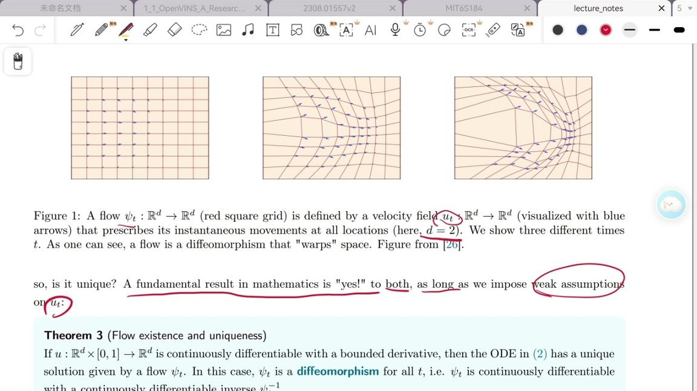
          <div class="video-card-body">
            <h3>MIT 6.S184: Flow Models</h3>
            <p>Course learning notes from MIT 6.S184.</p>
          </div>
        </a>
        <a class="video-card" href="https://www.bilibili.com/video/BV1wewJzUE6y/?share_source=copy_web&amp;vd_source=2925121f6b5fb979dc7fcc96129c516f" target="_blank" rel="noopener noreferrer">
          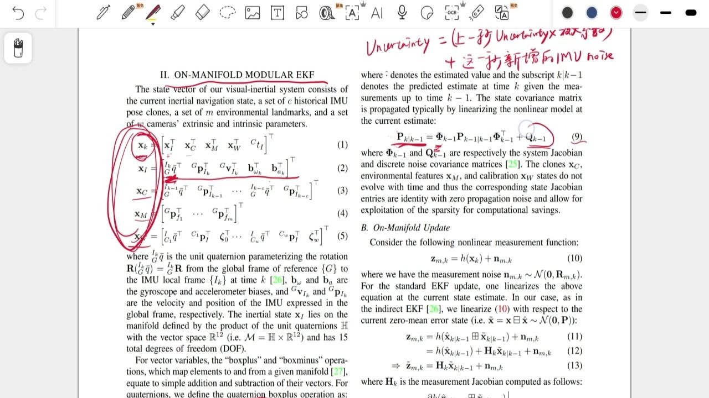
          <div class="video-card-body">
            <h3>OpenVINS数学理论讲解</h3>
            <p>An intuitive walkthrough of the mathematical foundations behind OpenVINS.</p>
          </div>
        </a>
        <a class="video-card" href="https://www.bilibili.com/video/BV1hJvrBWENG/?share_source=copy_web&amp;vd_source=2925121f6b5fb979dc7fcc96129c516f" target="_blank" rel="noopener noreferrer">
          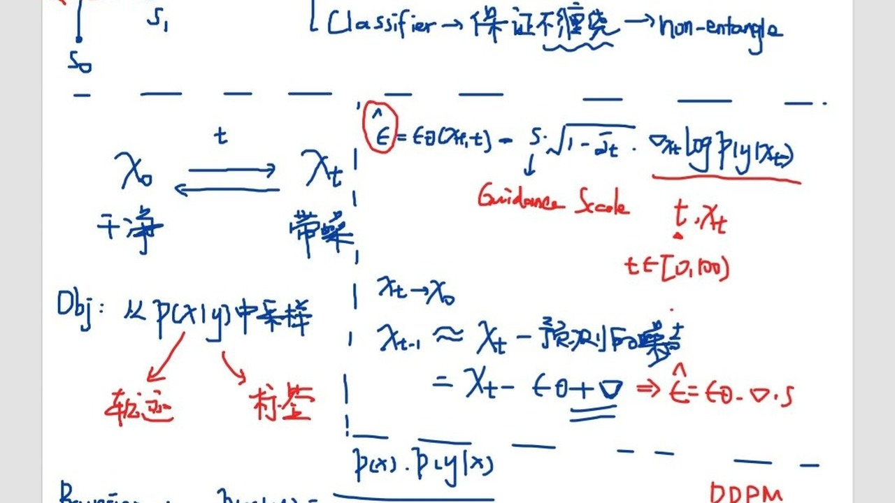
          <div class="video-card-body">
            <h3>关于扩散模型分类器引导的一点思考</h3>
            <p>Some thoughts about Classifier-guidance in Diffusion Models.</p>
          </div>
        </a>
        <a class="video-card" href="https://www.bilibili.com/video/BV17p3HzTExL/?share_source=copy_web&amp;vd_source=2925121f6b5fb979dc7fcc96129c516f" target="_blank" rel="noopener noreferrer">
          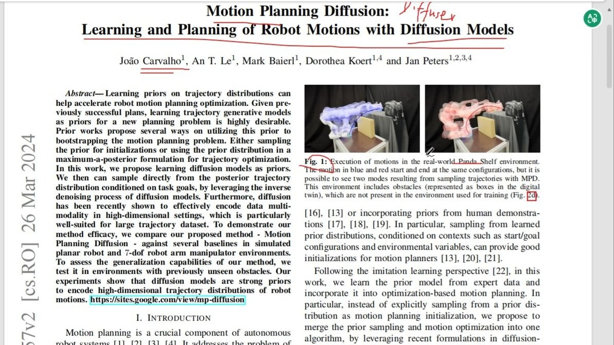
          <div class="video-card-body">
            <h3>MPD: 使用扩散模型学习与规划机器人的运动</h3>
            <p>An intuitive review note of Motion Planning Diffusion(MPD).</p>
          </div>
        </a>
      </div>
    </section>

    <section class="content open-service" style="--open-service-thumb-height: 220px;">
      <heading><b>MISC</b></heading>
      <p>
        <b>Hiking, FPV, History, Chess, League of Legends(highest ranking Emerald on the NA server).
      </p>
      <div class="video-grid">
        <div class="video-card">
          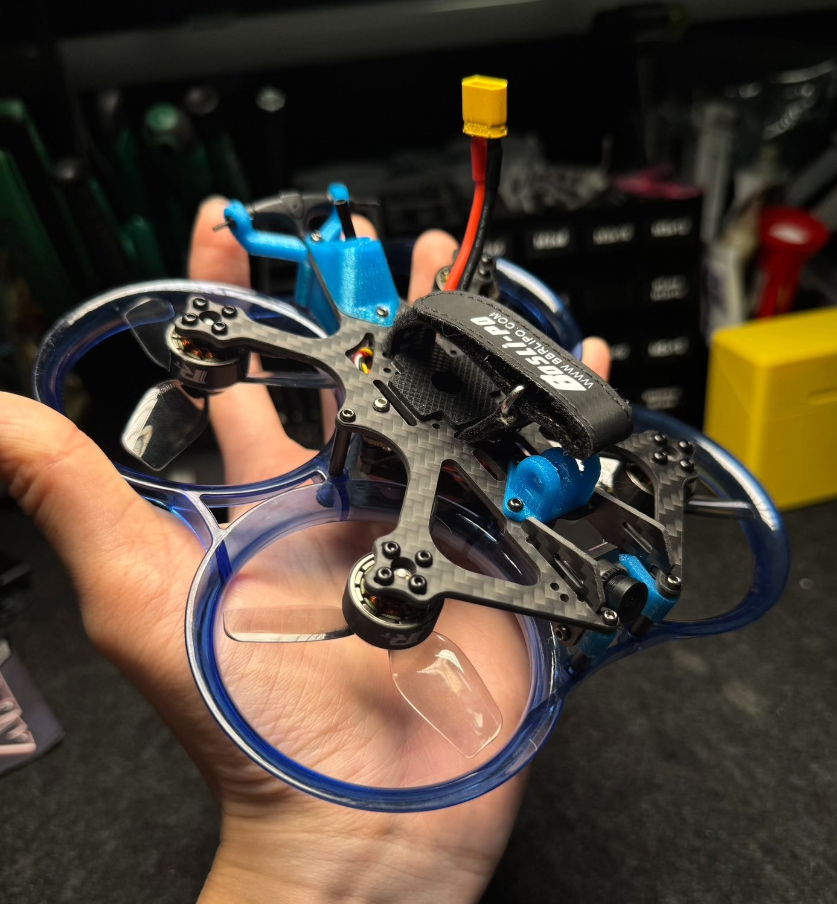
        </div>
        <div class="video-card">
          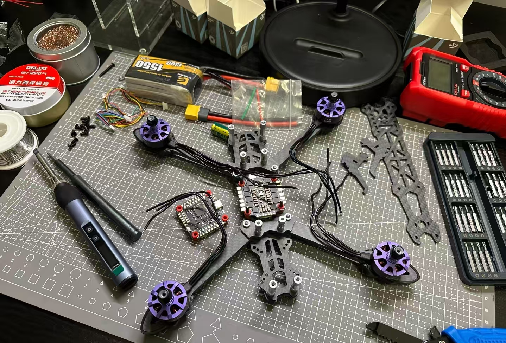
        </div>
        <div class="video-card">
          
        </div>
      </div>
    </section>

    <section class="content">
      <div class="map-container">
        <div class="map-frame">
          <!-- Replace the value after d= with your own ClustrMaps token -->
          <script type="text/javascript" id="clustrmaps" src="//clustrmaps.com/map_v2.js?d=UjXXT61suRkfFS3NnvSih5WbRfm9Izg93djOimzAeIQ&cl=ffffff&w=440"></script>
        </div>
      </div>
    </section>
    </div>
  
  <footer>
    <div class="container">
      <p>Updated on Apr 2, 2026 | Template by <a href="https://jonbarron.info">Jon Barron</a></p>
    </div>
  </footer>
  <script>
    document.querySelectorAll('.open-service .video-grid').forEach(function (grid) {
      grid.addEventListener('wheel', function (e) {
        if (Math.abs(e.deltaY) <= Math.abs(e.deltaX)) return;
        if (grid.scrollWidth <= grid.clientWidth) return;
        e.preventDefault();
        grid.scrollLeft += e.deltaY;
      }, { passive: false });

      var isPointerDown = false;
      var startX = 0;
      var startScrollLeft = 0;
      var moved = false;

      grid.addEventListener('pointerdown', function (e) {
        if (e.pointerType === 'mouse' && e.button !== 0) return;
        isPointerDown = true;
        moved = false;
        startX = e.clientX;
        startScrollLeft = grid.scrollLeft;
        if (grid.setPointerCapture) {
          grid.setPointerCapture(e.pointerId);
        }
      });

      grid.addEventListener('pointermove', function (e) {
        if (!isPointerDown) return;
        var dx = e.clientX - startX;
        if (Math.abs(dx) > 5) {
          moved = true;
        }
        if (grid.scrollWidth > grid.clientWidth) {
          e.preventDefault();
          grid.scrollLeft = startScrollLeft - dx;
        }
      });

      function endDrag() {
        isPointerDown = false;
      }
      grid.addEventListener('pointerup', endDrag);
      grid.addEventListener('pointercancel', endDrag);
      grid.addEventListener('pointerleave', endDrag);

      grid.addEventListener('click', function (e) {
        if (moved) {
          e.preventDefault();
          e.stopPropagation();
          moved = false;
        }
      }, true);
    });
  </script>
</body>
</html>
